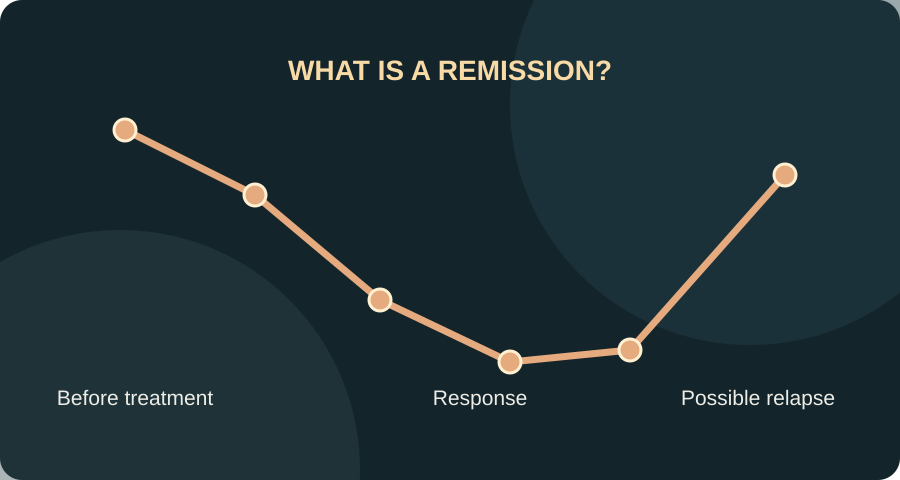

1. A different cancer becomes a new test for chemotherapy
The physicians at the National Cancer Institute were trying to decide whether combining several toxic drugs was worth the risk. At almost the same moment, two researchers working nearby produced a result that would change the argument.
Their names were Min Chiu Li and Roy Hertz. They were investigating choriocarcinoma, an uncommon cancer arising from the cells that normally help form the placenta during pregnancy.
This cancer could grow extraordinarily quickly. It sometimes followed an abnormal pregnancy and spread through the bloodstream to organs such as the lungs and brain. For affected women, it combined two forms of loss: a pregnancy gone wrong and a potentially fatal cancer.
The researchers wondered whether a drug already used against rapidly dividing leukemia cells might work against this equally rapidly dividing tumor.
2. Min Chiu Li: An unlikely pioneer
Li had come to the United States from China and worked at several medical institutions before joining Hertz's service at the NCI. In Mukherjee's account, he did not arrive as a celebrated cancer specialist with a carefully mapped research program. He was a restless, unconventional physician who had originally taken a position partly to avoid being drafted during the Korean War.
In August 1956, Li was called to care for a woman with advanced choriocarcinoma who was bleeding uncontrollably. She died within hours. The encounter affected him deeply.
He thought about Farber's leukemia experiments. Both leukemia and placental cancer involved cells capable of explosive multiplication. Perhaps an antifolate, such as methotrexate, could interfere with the tumor's DNA synthesis and slow it down.
This was a scientific analogy, not a guarantee. The two cancers originated in different tissues and behaved differently. But it gave Li a testable idea.
3. Ethel Longoria and the desperate attempt to save her
A few weeks later, another patient arrived: Ethel Longoria, a young woman with advanced choriocarcinoma. Her lungs contained tumor masses that were bleeding into the chest. She was losing blood so quickly that the medical team struggled to keep her alive.
The doctors resorted to an extraordinary supportive measure, collecting blood that had accumulated because of the bleeding and transfusing it back to her. Their immediate aim was simply to stabilize her enough for treatment.
They then began antifolate chemotherapy. The medical staff were uncertain she would survive the night.
But she did survive. The bleeding decreased, allowing further doses. Then an unexpected pattern emerged: the tumors began to shrink remarkably quickly.

4. A metastatic solid cancer seems to vanish
After several rounds of chemotherapy, Li and Hertz reviewed Ethel's chest X-rays. The masses that had filled her lungs had disappeared. Her physical condition improved dramatically.
The finding was so astonishing that the doctors initially questioned whether the X-rays belonged to the right patient. Rechecking confirmed the result.
This was a major advance: a solid cancer that had already spread through the body had responded to a systemically administered drug.
Why was this different from a surgeon removing a single tumor? A surgeon treats a particular location. Chemotherapy circulates through the body, so it can potentially reach cancer cells in multiple locations. This result suggested that cancer medicine might be able to treat distant metastatic disease rather than only the original tumor.
But the most important part of Li's discovery was still to come.
5. The mysterious hormone in the bloodstream
Choriocarcinoma cells often release human chorionic gonadotropin (hCG), a hormone also produced during pregnancy. Li realized that he could measure this hormone in blood to track the cancer's activity.
Think of a factory producing both a product and smoke. Even if you cannot see the factory through thick fog, detecting its smoke suggests that it is still operating. For Li, hCG could act like that smoke—a clue that cancer cells might still be present.
This is called a tumor marker: a measurable substance associated with tumor activity. A marker is not necessarily a perfect count of cancer cells, but in the setting Li was studying it provided valuable information beyond what was visible on an X-ray.
Visible tumor and biochemical evidence are different
| What the doctor observes | What it may mean |
|---|---|
| Tumor masses have shrunk on X-ray | Treatment is working, at least visibly |
| No tumor can be seen | Disease may be undetectable by that imaging method |
| hCG remains above its expected baseline | Active cancer may still remain despite normal-looking images |
| hCG returns to baseline and stays there | Stronger evidence of sustained disease control in this setting |
This distinction would soon create a serious conflict.
6. Li refuses to stop when the tumors disappear
After the planned chemotherapy, Ethel's visible tumors had vanished. Yet hCG was still measurable at an abnormal level. To Li, that lingering biochemical signal meant something important: the cancer had probably not been completely eliminated.
He continued administering methotrexate, even though additional treatment carried risks of serious toxicity. He monitored the hormone repeatedly, determined to continue until the hCG level returned to normal.
Other physicians were alarmed. They saw a woman who looked clinically well and whose tumors were no longer visible. Why expose her to more poisonous drugs? They regarded his decision as irresponsible experimentation on a patient who appeared to have recovered.
Li believed the opposite: stopping early could allow hidden malignant cells to grow back. The argument was about the definition of success itself.
7. The institution fires Li
The NCI's governing authorities learned that Li had extended treatment beyond the planned schedule. They summoned him and dismissed him.
The dismissal reveals a difficult ethical situation. Li's reasoning was scientifically plausible, but he was administering additional high-risk therapy without the support of the institution's established plan. The institution feared unnecessary harm; Li feared leaving cancer alive.
Freireich, who knew Li from earlier medical training, sympathized with the younger researcher's frustration. He understood that doctors who never challenged existing treatments would never develop new ones. Yet the risk of experimental drug toxicity was very real.
This is not a simple lesson that every rule-breaker is right. It is a lesson about how difficult it is to judge an unfamiliar treatment before adequate evidence has accumulated.
8. The outcome vindicates the biological idea
Over time, a pattern became apparent. Patients whose methotrexate was stopped while the tumor marker remained elevated experienced cancer relapses. Those who received further treatment until the marker became normal could remain disease-free for long periods.
Li had recognized an essential principle: a cancer may need to be treated after all visible evidence has disappeared.
The book identifies the prolonged treatment approach in choriocarcinoma as the first chemotherapy cure of a cancer in adults. Li's dismissal became one of the history's cruel ironies: a decision judged reckless at the time was later recognized as pointing toward a durable treatment strategy.

9. Why this matters for leukemia too
In Chapter 3, Robert Sandler's blood counts improved dramatically after aminopterin, but his leukemia returned. Li's work suggested an explanation for some such relapses: disappearance of visible or measurable disease may leave behind malignant cells too few to detect.
This does not mean that all diseases should receive indefinite chemotherapy. It means doctors need evidence about when treatment can safely end. Some cancers require repeated cycles and maintenance treatment; others do not. The biology of the specific cancer determines what is useful.
10. The deeper meaning: A number can reveal what the eye cannot
Li was accused of treating a laboratory number rather than a human being. That accusation sounded powerful because medicine should care for people, not just measurements.
But this chapter shows the opposite possibility too. A well-chosen measurement can protect a patient by detecting the disease that has not yet become visible. The crucial question is whether the measurement truly tracks the illness and whether acting on it improves outcomes.
The story also complicates the meaning of cure. Looking well is not the same as being cured; a dramatic remission is not always a permanent one. Time, repeated observation, and systematic evidence are needed.
Chapter takeaway: Li and Hertz demonstrate that chemotherapy can eliminate a widely spread solid cancer. Li's insistence on treating residual disease—tracked by hCG—reveals that successful cancer treatment sometimes must continue beyond the disappearance of visible tumors.